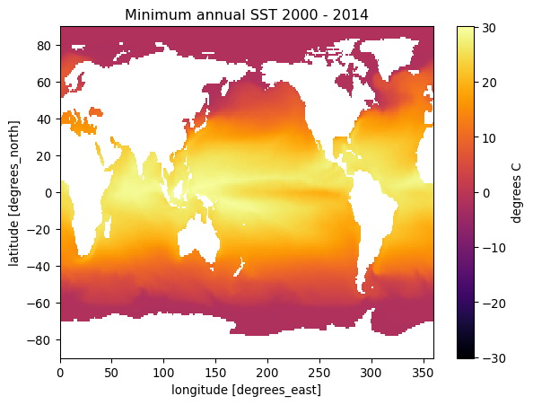
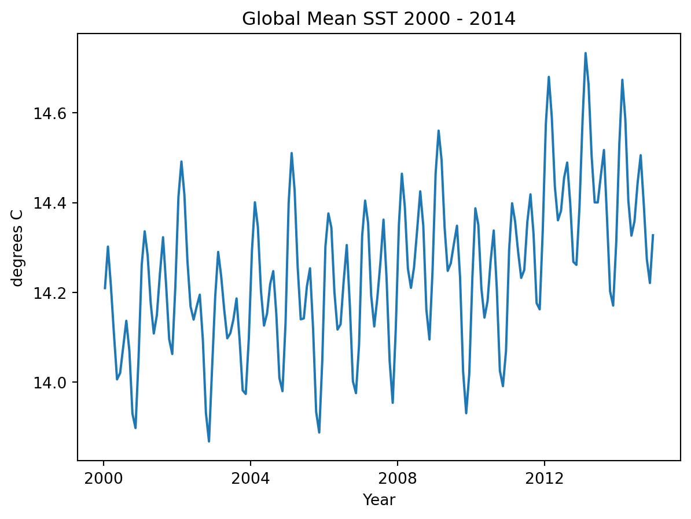
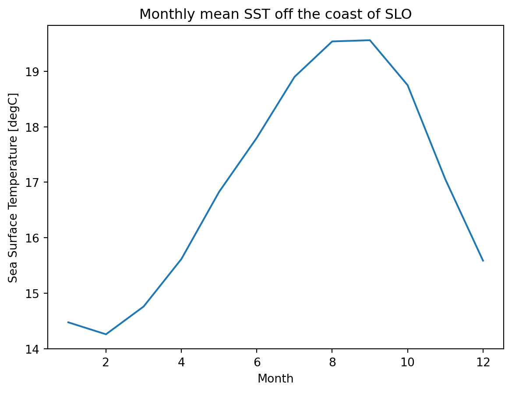
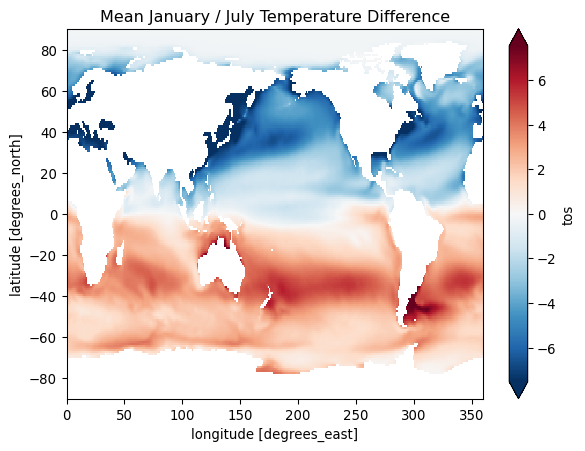
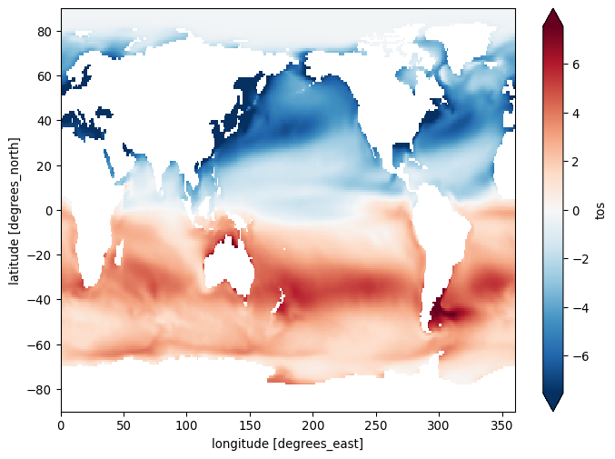

import matplotlib.pyplot as plt
import numpy as np
import xarray as xr
from pythia_datasets import DATASETS
import matplotlib.pyplot as plt
filepath = DATASETS.fetch('CESM2_sst_data.nc')Xarray
Working with Spatio-temporal Data
In this tutorial we will be looking at sea surface temperatures using Community Earth System Model 2 (CESM2) data. This tutorial borrows heavily from this tutorial by Computational Tools in Climate Science. That tutorial has much more information about climatology, the focus here is using Xarray for data cubes.
This is gridded climate data given in lat, lon coordinates. In the rioXarray tutorials we will learn to deal with projections etc…
First import libraries and download dataset.
Open the dataset and inspect. It is an Xarray Dataset. It has coordinates lat, lon, and time. It has corresponding indices It has spatial and time coordinates, hence we call it a spatio-temporal dataset.
ds = xr.open_dataset(filepath)
ds/home/michael/miniconda3/envs/geo3/lib/python3.12/site-packages/xarray/conventions.py:204: SerializationWarning: variable 'tos' has multiple fill values {np.float32(1e+20), np.float64(1e+20)} defined, decoding all values to NaN.
var = coder.decode(var, name=name)<xarray.Dataset> Size: 47MB
Dimensions: (time: 180, d2: 2, lat: 180, lon: 360)
Coordinates:
* time (time) object 1kB 2000-01-15 12:00:00 ... 2014-12-15 12:00:00
* lat (lat) float64 1kB -89.5 -88.5 -87.5 -86.5 ... 86.5 87.5 88.5 89.5
* lon (lon) float64 3kB 0.5 1.5 2.5 3.5 4.5 ... 356.5 357.5 358.5 359.5
Dimensions without coordinates: d2
Data variables:
time_bnds (time, d2) object 3kB ...
lat_bnds (lat, d2) float64 3kB ...
lon_bnds (lon, d2) float64 6kB ...
tos (time, lat, lon) float32 47MB ...
Attributes: (12/45)
Conventions: CF-1.7 CMIP-6.2
activity_id: CMIP
branch_method: standard
branch_time_in_child: 674885.0
branch_time_in_parent: 219000.0
case_id: 972
... ...
sub_experiment_id: none
table_id: Omon
tracking_id: hdl:21.14100/2975ffd3-1d7b-47e3-961a-33f212ea4eb2
variable_id: tos
variant_info: CMIP6 20th century experiments (1850-2014) with C...
variant_label: r11i1p1f1You can subset the data along an axis with slicing (here we explicitly create a slice object)
ds.sel(
time=slice('2004-01-01', '2004-12-31')
)<xarray.Dataset> Size: 3MB
Dimensions: (time: 12, d2: 2, lat: 180, lon: 360)
Coordinates:
* time (time) object 96B 2004-01-15 12:00:00 ... 2004-12-15 12:00:00
* lat (lat) float64 1kB -89.5 -88.5 -87.5 -86.5 ... 86.5 87.5 88.5 89.5
* lon (lon) float64 3kB 0.5 1.5 2.5 3.5 4.5 ... 356.5 357.5 358.5 359.5
Dimensions without coordinates: d2
Data variables:
time_bnds (time, d2) object 192B ...
lat_bnds (lat, d2) float64 3kB ...
lon_bnds (lon, d2) float64 6kB ...
tos (time, lat, lon) float32 3MB ...
Attributes: (12/45)
Conventions: CF-1.7 CMIP-6.2
activity_id: CMIP
branch_method: standard
branch_time_in_child: 674885.0
branch_time_in_parent: 219000.0
case_id: 972
... ...
sub_experiment_id: none
table_id: Omon
tracking_id: hdl:21.14100/2975ffd3-1d7b-47e3-961a-33f212ea4eb2
variable_id: tos
variant_info: CMIP6 20th century experiments (1850-2014) with C...
variant_label: r11i1p1f1Check out the attributes (you can click the drop down arrows). Notice the units are degrees C. If you wanted the temperature in Kelvins you can change them very much as you would change a column in Pandas.
ds.tos + 273.15<xarray.DataArray 'tos' (time: 180, lat: 180, lon: 360)> Size: 47MB
array([[[ nan, nan, nan, ..., nan, nan,
nan],
[ nan, nan, nan, ..., nan, nan,
nan],
[ nan, nan, nan, ..., nan, nan,
nan],
...,
[271.3552 , 271.3553 , 271.3554 , ..., 271.35495, 271.355 ,
271.3551 ],
[271.36005, 271.36014, 271.36023, ..., 271.35986, 271.35992,
271.36 ],
[271.36447, 271.36453, 271.3646 , ..., 271.3643 , 271.36435,
271.3644 ]],
[[ nan, nan, nan, ..., nan, nan,
nan],
[ nan, nan, nan, ..., nan, nan,
nan],
[ nan, nan, nan, ..., nan, nan,
nan],
...
[271.40677, 271.40674, 271.4067 , ..., 271.40695, 271.4069 ,
271.40683],
[271.41296, 271.41293, 271.41293, ..., 271.41306, 271.413 ,
271.41296],
[271.41772, 271.41772, 271.41772, ..., 271.41766, 271.4177 ,
271.4177 ]],
[[ nan, nan, nan, ..., nan, nan,
nan],
[ nan, nan, nan, ..., nan, nan,
nan],
[ nan, nan, nan, ..., nan, nan,
nan],
...,
[271.39386, 271.39383, 271.3938 , ..., 271.39407, 271.394 ,
271.39392],
[271.39935, 271.39932, 271.39932, ..., 271.39948, 271.39944,
271.39938],
[271.40372, 271.40372, 271.40375, ..., 271.4037 , 271.4037 ,
271.40372]]], shape=(180, 180, 360), dtype=float32)
Coordinates:
* time (time) object 1kB 2000-01-15 12:00:00 ... 2014-12-15 12:00:00
* lat (lat) float64 1kB -89.5 -88.5 -87.5 -86.5 ... 86.5 87.5 88.5 89.5
* lon (lon) float64 3kB 0.5 1.5 2.5 3.5 4.5 ... 356.5 357.5 358.5 359.5Boom Kelvins!
Note
Do you notice all of those NaNs? This is sea surface temperature, so where there is land, there is no data.
Aggregations
A common thing to do in performing various types of analysis is to apply aggregations such as .sum(), .mean(), .median(), .min(), or .max(). These methods can be used to reduce data to provide insights into the nature of a large dataset. For example, one might want to calculate the minimum temperature for each cell (temporal minimum).
global_min = ds.tos.min(dim='time')
global_min<xarray.DataArray 'tos' (lat: 180, lon: 360)> Size: 259kB
array([[ nan, nan, nan, ..., nan, nan,
nan],
[ nan, nan, nan, ..., nan, nan,
nan],
[ nan, nan, nan, ..., nan, nan,
nan],
...,
[-1.8083605, -1.8083031, -1.8082187, ..., -1.8083988, -1.8083944,
-1.8083915],
[-1.8025414, -1.8024837, -1.8024155, ..., -1.8026428, -1.8026177,
-1.8025846],
[-1.7984415, -1.7983989, -1.7983514, ..., -1.7985678, -1.7985296,
-1.7984871]], shape=(180, 360), dtype=float32)
Coordinates:
* lat (lat) float64 1kB -89.5 -88.5 -87.5 -86.5 ... 86.5 87.5 88.5 89.5
* lon (lon) float64 3kB 0.5 1.5 2.5 3.5 4.5 ... 356.5 357.5 358.5 359.5Pay attention to the dimensions of the above output. We have collapsed the time dimension using the .min() method, so we are left with a 2D grid of lat and lon.
fig, ax = plt.subplots();
title = f'Minimum annual SST {ds.time.min().item().year} - {ds.time.max().item().year}'
global_min.plot(cmap='inferno', ax=ax, cbar_kwargs={'label': 'degrees C'});
ax.set_title(title );
We could also aggregate spatially, for instance we could find the mean the sea surface temperature across the entire grid at eac time step, leaving us with a 1D timeseries of mean temperatures.
t_mean = ds.tos.mean(dim=["lat", "lon"])
t_mean
fig, ax = plt.subplots();
t_mean.plot()
title = f'Global Mean SST {ds.time.min().item().year} - {ds.time.max().item().year}'
ax.set_title(title);
ax.set_ylabel('degrees C');
ax.set_xlabel('Year');
Exercise
Now that you know how to slice and aggregate, find and plot a map of maximum SST for the year 2005.
GroupBy: Split, Apply, Combine
Often it is useful to aggregate conditionally on some coordinate labels or groups.

Here we will use a split-apply-combine workflow to remove seasonal cycles from the data.
Here is the splitting alone using .groupby
ds.tos.groupby(ds.time.dt.month)<DataArrayGroupBy, grouped over 1 grouper(s), 12 groups in total:
'month': 12/12 groups present with labels 1, 2, 3, 4, 5, 6, 7, 8, 9, 10, 11, 12>grouped_mean = ds.tos.groupby(ds.time.dt.month).mean()
grouped_mean<xarray.DataArray 'tos' (month: 12, lat: 180, lon: 360)> Size: 3MB
array([[[ nan, nan, nan, ..., nan,
nan, nan],
[ nan, nan, nan, ..., nan,
nan, nan],
[ nan, nan, nan, ..., nan,
nan, nan],
...,
[-1.780786 , -1.780688 , -1.7805718, ..., -1.7809757,
-1.7809197, -1.7808627],
[-1.7745041, -1.7744204, -1.7743237, ..., -1.77467 ,
-1.774626 , -1.7745715],
[-1.7691481, -1.7690798, -1.7690051, ..., -1.7693441,
-1.7692844, -1.7692182]],
[[ nan, nan, nan, ..., nan,
nan, nan],
[ nan, nan, nan, ..., nan,
nan, nan],
[ nan, nan, nan, ..., nan,
nan, nan],
...
[-1.7605033, -1.760397 , -1.7602725, ..., -1.760718 ,
-1.7606541, -1.7605885],
[-1.7544289, -1.7543424, -1.7542422, ..., -1.754608 ,
-1.754559 , -1.7545002],
[-1.7492163, -1.749148 , -1.7490736, ..., -1.7494118,
-1.7493519, -1.7492864]],
[[ nan, nan, nan, ..., nan,
nan, nan],
[ nan, nan, nan, ..., nan,
nan, nan],
[ nan, nan, nan, ..., nan,
nan, nan],
...,
[-1.7711828, -1.7710832, -1.7709653, ..., -1.7713748,
-1.7713183, -1.7712607],
[-1.7648666, -1.7647841, -1.7646879, ..., -1.7650299,
-1.7649865, -1.7649331],
[-1.759478 , -1.7594113, -1.7593384, ..., -1.7596704,
-1.7596117, -1.759547 ]]], shape=(12, 180, 360), dtype=float32)
Coordinates:
* lat (lat) float64 1kB -89.5 -88.5 -87.5 -86.5 ... 86.5 87.5 88.5 89.5
* lon (lon) float64 3kB 0.5 1.5 2.5 3.5 4.5 ... 356.5 357.5 358.5 359.5
* month (month) int64 96B 1 2 3 4 5 6 7 8 9 10 11 12
Attributes: (12/19)
cell_measures: area: areacello
cell_methods: area: mean where sea time: mean
comment: Model data on the 1x1 grid includes values in all cells f...
description: This may differ from "surface temperature" in regions of ...
frequency: mon
id: tos
... ...
time_label: time-mean
time_title: Temporal mean
title: Sea Surface Temperature
type: real
units: degC
variable_id: tosFor every spatial coordinate (gridded cell center), we now have a monthly mean SST for the time period. So lets look a monthly mean off the coast of San Luis Obispo.
fig, ax = plt.subplots();
grouped_mean.sel(lon=238, lat=35.2289, method='nearest').plot();
ax.set_title('Monthly mean SST off the coast of SLO');
ax.set_xlabel('Month');
Question???
What are these trailing semicolons all about? Python does not typically end lines with a semicolon. Experiment with the above code block with and without the semicolons.
fig, ax = plt.subplots();
(grouped_mean.sel(month=1) - grouped_mean.sel(month=7)).plot(size=6, robust=True)
ax.set_title('Mean January / July Temperature Difference');
